= ∑
α∣α3−α2+α+1=0α ∗ log(x2 + 2αx − 5x + α2),
= ∑
α∣α3−α2+α+1=0α ∗ log(x2 + 2αx − 5x + α2),
| Up | Next | Prev | PrevTail | Tail |
Author: Neil Langmead
This package was written when the author was a placement student at ZIB Berlin.
This package implements the Horowitz/ Rothstein/ Trager algorithms [GCL92] for the integration of rational functions in REDUCE. We work within a field K of characteristic 0 and functions p,q ∈ K[x]. K is normally the field Q of rational numbers, but not always. These procedures return ∫
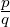
dx. The aim is to be able to integrate any function of the form p∕q in x, where p and q are polynomials in the field Q. The algorithms used avoid algebraic number extensions wherever possible, and in general, express the integral using the minimal algebraic extension field.
This function has the following syntax:
where ⟨p⟩ and ⟨q⟩ are polynomials in ⟨var⟩, so that p∕q is a rational function in var. The output of ratint is a list of two elements: the first is the polynomial part of the integral, the second is the logarithmic part. The integral is the sum of these parts.
Consider the following examples in REDUCE (the meaning of the log_sum operator will be explained in the next section).
The following main algorithm is used:
procedure ratint(p,q,x);
% p and q are polynomials in x, with coefficients in the
% constant field Q
solution_list ← HorowitzReduction(p,q,x)
c∕d ← part(solution_list,1)
poly_part ← part(solution_list,2)
rat_part ← part(solution_list,3)
rat_part ← LogarithmicPartIntegral(rat_part,x)
return(rat_part + c∕d + poly_part)
end
The algorithm contains two subroutines, HorowitzReduction and rt. HorowitzReduction
is an implementation of Horowitz’ method to reduce a given rational function into a
polynomial part and a logarithmic part. The integration of the polynomial part is a trivial
task, and is done by the int operator in REDUCE. The integration of the logarithmic part
is done by the routine rt, which is an implementation of the Rothstein and Trager
method. These two answers are outputed in a list, the complete answer being the sum of
these two parts.
These two algorithms are as follows:
procedure how(p,q,x)
for a given rational function p∕q in x, this algorithm calculates the
reduction of ∫
(p∕q) into a polynomial part and logarithmic part.
poly_part ← quo(p,q); p ← rem(p,q);
d ← GCD(q,q′); b ← quo(q,d); m ← deg(b);
n ← deg(d);
a ←∑
i=1m−1aixi; c ←∑
i=1n−1cixi;
r ← b ∗ c′− quo(b ∗ d′,d) + d ∗ a;
for i from 0 to m + n − 1 do
{
eqns(i) ← coeff(p,i) = coeff(r,i);
};
solve(eqns,{a(0),....,a(m − 1),c(0),....,c(n − 1)});
return(c∕d + ∫
poly_part + a∕b);
end;
procedure RothsteinTrager(a,b,x)
% Given a rational function a∕b in x with deg(a) < deg(b),
with b monic and square free, we calculate ∫
(a∕b)
R(z) ← resultant(a − zb′,b)
(r1(z)...rk(z)) ← factors(R(z))
integral ← 0
for i from 1 to k do
{
d ← degree(ri(z))
if d = 1 then {
c ← solve(ri(z) = 0,z)
v ← GCD(a − cb′,b)
v ← v∕lcoeff(v)
integral ←
integral + c ∗ log(v)
}
else {
% we need to do a GCD over algebraic number
field
v ← GCD(a − α ∗ b′,b)
v ← v∕lcoff(v), where
α = roof_of(ri(z))
if d = 2 then {
% give answer in terms of
radicals
c ← solve(ri(z) = 0,z)
for j from 1 to 2 do {
v[j] ← substitute(α =
c[j],v)
integral ←
integral + c[j] ∗ log(v[j])
}
else {
% Need answer in terms of
root_of notation
for j from 1 to d do {
v[j]
← substitute(α = c[j],v)
integral
← integral + c[j] ∗ log(v[j])
% where
c[j] = root_of(ri(z)) }
}
}
}
return(integral)
end
The algorithms above returns a sum of terms of the form
| ∑ α∣R(α)=0 log(S(α,x)), |
where R ∈ K[z] is square free, and S ∈ K[z,x]. In the cases where the degree of R(α) is less than two, this is merely a sum of logarithms. For cases where the degree is two or more, I have chosen to adopt this notation as the answer to the original problem of integrating the rational function. For example, consider the integral
|
∫
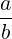 = ∫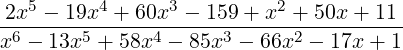 dx |
Calculating the resultant R(z) = resx(a − zb′,b) and factorising gives
| R(z) = −190107645728000(z3 − z2 + z + 1)2 |
Making the result monic, we have
| R2(z) = z3 − z2 + z + 1 |
which does not split over the constant field Q. Continuting with the Rothstein Trager algorithm, we now calculate
| gcd(a − αb′,b) = z2 + (2 ∗ α − 5) ∗ z + α2, |
where α is a root of R2(z).
Thus we can write
|
∫
= ∑
α∣α3−α2+α+1=0α ∗ log(x2 + 2αx − 5x + α2),
|
and this is the answer now returned by REDUCE, via a function called log_sum. This has the following syntax:
log_sum(α,eqn(α),0,sum_term,var)
where α satisfies eqn = 0, and sum_term is the term of the summation in the variable var. Thus in the above example, we have
∫
 dx = log_sum(α,α3 − α2 + α + 1,0,α ∗ log(x2 + 2αx − 5x + α2),x) dx = log_sum(α,α3 − α2 + α + 1,0,α ∗ log(x2 + 2αx − 5x + α2),x)
|
Many rational functions that could not be integrated by REDUCE previously can now be integrated with this package. The above is one example; some more are given on the next page.
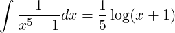
|
+ 5log_sum(β,β4 + 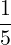 β3 +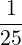 β2 +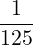 β +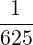 ,0,log(5 ∗ β + x) ∗ β) |
which should be read as
|
∫
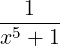 dx =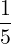 log(x + 1) + ∑ β∣β4+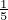 β3+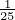 β2+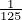 β+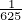 =0 log(5 ∗ β + x)β |
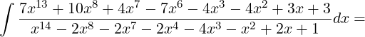
|
log_sum(α,α2 − α − 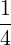 ,0,log(−2αx2 − 2αx + x7 + x2 − 1) ∗ α,x), |
|
∫
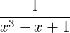 dx = log_sum(β,β3−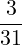 β2−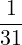 ,0,β log(−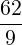 β2+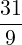 β+x+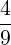 )). |
There are several alternative forms that the answer to the integration problem can take. One output is the log_sum form shown in the examples above. There is an option with this package to convert this to a “normal” sum of logarithms in the case when the degree of eqn in α is two, and α can be expressed in surds. To do this, use the function convert, which has the following syntax:
If ⟨exp⟩ is free of log_sum terms, then ⟨exp⟩ itself is returned. If ⟨exp⟩ contains log_sum terms, then α is represented as surds, and substituted into the log_sum expression. For example, using the last example, we have in REDUCE:
The user could then combine these to form a more elegant answer, using the switch combinelogs if one so wished. Another option is to convert complex logarithms to real arctangents [Bro97], which is recommended if definite integration is the goal. This is implemented in REDUCE via a function convert_log, which has the following syntax:
where ⟨exp⟩ is any expression containing log_sum terms.
The procedure to convert complex logarithms to real arctangents is based on an algorithm by Rioboo. Here is what it does:
Given a field K of characteristic 0 such that
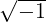
∉K and A,B ∈ K[x] with B≠0, return a sum f of arctangents of polynomials in K[x] such that|
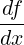 =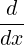 ilog(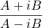 ) |
Example:
|
∫
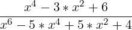 dx = ∑ α∣4α+1=0α log(x3 + 2αx2 − 3x − 4α) |
Substituting α = i∕2 and α = −i∕2 gives the result
|
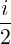 log(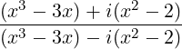 ) |
Applying logtoAtan now with A = x3 − 3x, and B = x2 − 2 we obtain
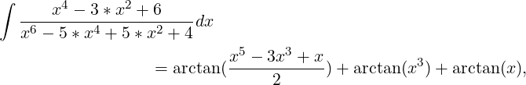 |
Another example in REDUCE is given below:
The package also implements Hermite’s method to reduce the integral into its polynomial and logarithmic parts, but occasionally, REDUCE returns the incorrect answer when this algorithm is used. This is due to the REDUCE operator pf, which performs a complete partial fraction expansion when given a rational function as input. Work is presently being done to give the pf operator a facility which tells it that the input is already factored. This would then enable REDUCE to perform a partial fraction decomposition with respect to a square free denominator, which may not necessarily be fully factored over Q.
For a complete explanation of this and the other algorithms used in this package, including the theoretical justification and proofs, please consult [GCL92].
The package includes a facility to trace in some detail the inner workings of the ratint program. Messages are given at the key stages of the algorithm, together with the results obtained. These messages are displayed when the switch traceratint is on, which is done in REDUCE with the command
This switch is off by default. Here is an example of the output obtained with this switch on:
This package was written when the author was working as a placement student at ZIB Berlin.
| Up | Next | Prev | PrevTail | Front |